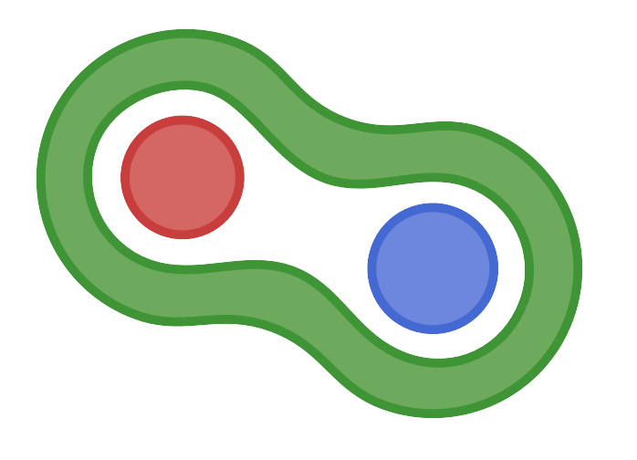

How Flux Works: Parameters, Gradients, and Layers
A neural network is a function with parameters. That is, it takes some input x and gives you some output y, whose value also depends on some other numbers θ.
A sufficiently flexible function can, by adjusting the parameters just right, be made to do many things. And the one magic trick for adjusting parameters is to follow a gradient.
This page describes Flux's take on how to construct such flexible functions containing many parameters, and how to handle their gradients.
Parameterised Functions
Let's start with very simple functions. This is a polynomial in x::Real, returning another real number y which depends on some coefficients stored in a vector:
θ = [10, 1, 0.1]
poly1(x::Real) = θ[1] + θ[2]*x + θ[3]*x^2
poly1(5) == 17.5 # trueHere the parameters are a global variable θ. They could be handled in other ways, for instance by explicitly passing them as an additional argument to the function:
poly2(x::Real, θ2) = evalpoly(x, θ2) # built-in, from Base.Math
poly2(5, θ) == 17.5 # trueFlux chooses a third path, by encapsulating the parameters within the function. The simplest way to do this is a closure, an anonymous function which Julia knows to depend on some local variable θ3:
poly3 = let θ3 = [10, 1, 0.1]
x -> evalpoly(x, θ3)
end
poly3(5) == 17.5 # trueAn equivalent, but tidier, way is to construct a struct in which to store the parameters. Any struct can be made callable, allowing its instances to act just like function:
struct Poly3{T} # container struct
θ3::T
end
(p::Poly3)(x::Real) = evalpoly(x, p.θ3) # make this callable
poly3s = Poly3([10, 1, 0.1]) # construct an instance
poly3s(5) == 17.5 # trueInternally, there is little difference between a closure and a struct. They have the same fields, and equivalent methods:
dump(poly3), dump(poly3s) # both contain θ3: Array
poly3s.θ3 == poly3.θ3 == θ # field called :θ3 has same value
methods(poly3)
methods(poly3s) # each has 1 method, accepting xThe virtue of encapsulation is that it makes composition very easy. We can make more complicated functions by combining simple ones, and each will keep track of its own parameters. Juia writes function composition as ∘, for instance (inv ∘ sin)(pi/6) ≈ 2, and we can use exactly this for our parameterised polynomials:
poly4 = Poly3([1, 0.5, 0]) ∘ Poly3([10, 1, 0.1])
poly4 isa ComposedFunction # ∘ creates another struct...
poly4.outer.θ3 == θ # which has fields :inner & :outer
poly4(5) == 9.75 # trueFlux models are precisely made by such function composition. In fact, poly3 and poly4 are already valid Flux models.
Structural Gradients
The derivative of a scalar function is its slope: how fast the output changes as the input is changed slightly. This may be found approximately by evaluating at two nearby points, and exactly by taking the limit in which the distance between them approaches zero:
julia> (poly1(5 + 0.1) - poly1(5)) / 0.1
2.010000000000005
julia> (poly1(5 + 0.001) - poly1(5)) / 0.001 # answer is getting close to 2
2.000100000003613Flux's gradient(f, x) works this out for f(x), and gives exactly ∂f/∂x = 2.0 here:
julia> using Flux
julia> gradient(poly1, 5)
(2.0,)The reason gradient returns a tuple, not just the number 2.0, is to allow for functions taking several arguments. (That's also why it's not called "derivative".) For instance, this returns ∂f/∂x, ∂f/∂y, ∂f/∂z:
julia> gradient((x,y,z) -> (x*y)+z, 30, 40, 50)
(40.0, 30.0, 1.0)For our parameterised polynomial, we have ∂f/∂x but we are really more interested in ∂f/∂θ, as this will tell us about how the parameters are affecting the answer. It is not impossible to track gradients with respect to global θ, but much clearer to track explicit arguments. Here's how this works for poly2 (which takes θ as a 2nd argument) and poly3 (which encapsulates θ):
julia> grad2 = gradient(poly2, 5, θ)
(2.0, [1.0, 5.0, 25.0])
julia> grad3 = gradient((x,p) -> p(x), 5, poly3s)
(2.0, (θ3 = [1.0, 5.0, 25.0],))The first entry is ∂f/∂x as before, but the second entry is more interesting. For poly2, we get ∂f/∂θ as grad2[2] directly. It is a vector, because θ is a vector, and has elements [∂f/∂θ[1], ∂f/∂θ[2], ∂f/∂θ[3]].
For poly3s, however, we get a NamedTuple whose fields correspond to those of the struct Poly3. This is called a structural gradient. And the nice thing about them is that they work for arbitrarily complicated structures, for instance:
julia> grad4 = gradient(|>, 5, poly4)
(1.0, (outer = (θ3 = [1.0, 17.5, 306.25],), inner = (θ3 = [0.5, 2.5, 12.5],)))Here grad4.inner.θ3 corresponds to poly4.inner.θ3. These matching nested structures are at the core of how Flux works.
Earlier versions of Flux used a different way to relate parameters and gradients, which looks like this:
g1 = gradient(() -> poly1(5), Params([θ]))
g1[θ] == [1.0, 5.0, 25.0]Here Params is a set of references to global variables using objectid, and g1 isa Grads is a dictionary from these to their gradients. This method of gradient takes a zero-argument function, which only implicitly depends on θ.
 Zygote.jl
Flux's gradient function by default calls a companion packages called Zygote. Zygote performs source-to-source automatic differentiation, meaning that gradient(f, x) hooks into Julia's compiler to find out what operations f contains, and transforms this to produce code for computing ∂f/∂x.
Zygote can in principle differentiate almost any Julia code. However, it's not perfect, and you may eventually want to read its page about limitations. In particular, a major limitation is that mutating an array is not allowed.
Flux can also be used with other automatic differentiation (AD) packages. It was originally written using Tracker, a more traditional operator-overloading approach. The future might be Enzyme, and Flux now builds in an easy way to use this instead, turned on by wrapping the model in Duplicated. (For details, see the Enzyme page in the manual.)
julia> using Enzyme: Const, Duplicated
julia> grad3e = Flux.gradient((x,p) -> p(x), Const(5.0), Duplicated(poly3s))
(nothing, (θ3 = [1.0, 5.0, 25.0],))Flux.gradient follows Zygote's convention that arguments with no derivative are marked nothing. Here, this is because Const(5.0) is explicitly constant. Below, we will see an example where nothing shows up because the model struct has fields containing things other than parameters, such as an activation function. (It also adopts the convention that gradient(f, x, y) returns a tuple (∂f/∂x, ∂f/∂y), without a "∂f/∂f" term for the function. This is why we had to write gradient(|>, 5, poly4) above, not just gradient(poly4, 5).)
Finally, the function withgradient works the same way, but also returns the value of the function:
julia> Flux.withgradient((x,p) -> p(x), 5.0, poly3s)
(val = 17.5, grad = (2.0, (θ3 = [1.0, 5.0, 25.0],)))Simple Neural Networks
The polynomial functions above send a number x to another a number y. Neural networks typically take a vector of numbers, mix them all up, and return another vector. Here's a very simple one, which will take a vector like x = [1.0, 2.0, 3.0] and return another vector y = layer1(x) with length(y) == 2:
W = randn(2, 3)
b = zeros(2)
sigmoid(x::Real) = 1 / (1 + exp(-x))
layer1(x) = sigmoid.(W*x .+ b)Here sigmoid is a nonlinear function, applied element-wise because it is called with .(), called broadcasting.
Like poly1 above, this layer1 has as its parameters the global variables W, b. We can similarly define a version which takes these as arguments (like poly2), and a version which encapsulates them (like poly3 above):
layer2(x, W2, b2) = sigmoid.(W2*x .+ b2) # explicit parameter arguments
layer3 = let
W3 = randn(2, 3)
b3 = zeros(2)
x -> sigmoid.(W3*x .+ b3) # closure over local variables
end
layer3([1.0, 2.0, 3.0]) isa Vector # check that it runsThis third way is precisely a Flux model. And we can again make a tidier version using a struct to hold the parameters:
struct Layer # container struct
W::Matrix
b::Vector
act::Function
end
(d::Layer)(x) = d.act.(d.W*x .+ d.b) # make it callabale
Layer(in::Int, out::Int, act::Function=sigmoid) =
Layer(randn(Float32, out, in), zeros(Float32, out), act)
layer3s = Layer(3, 2) # instance with its own parametersThe one new thing here is a friendly constructor Layer(in, out, act). This is because we anticipate composing several instances of this thing, with independent parameter arrays, of different sizes and different random initial parameters.
Let's try this out, and look at its gradient:
x = Float32[0.1, 0.2, 0.3] # input
layer3s(x) # output, 2-element Vector{Float32}
Flux.gradient((x,d) -> d(x)[1], x, layer3s)[2] # NamedTuple{(:W, :b, :act)}This ∂f/∂layer3s is a named tuple with the same fields as Layer. Within it, the gradient with respect to W is a matrix of seemingly random numbers. Notice that there is also an entry for act, which is nothing, as this field of the struct is not a smoothly adjustible parameter.
We can compose these layers just as we did the polynomials above, in poly4. Here's a composition of 3 functions, in which the last step is the function only which takes a 1-element vector and gives us the number inside:
model1 = only ∘ Layer(20, 1) ∘ Layer(1, 20)
y = model1(Float32[0.1]) # output is a Float32 number
grad = Flux.gradient(|>, [1f0], model1)[2]This gradient is starting to be a complicated nested structure. But it works just like before: grad.outer.inner.W corresponds to model1.outer.inner.W.
We don't have to use ∘ (which makes a ComposedFunction struct) to combine layers. Instead, we could define our own container struct, or use a closure. This model2 will work the same way (although its fields have different names):
model2 = let
lay1 = Layer(1, 20) # local variables containing layers
lay2 = Layer(20, 1)
function fwd(x) # equivalent to x -> only(lay2(lay1(x)))
mid = lay1(x)
lay2(mid) |> only
end
end
model2(Float32[0.1])
Flux.gradient(|>, [1f0], model2)[2] Flux's layers
Flux's layers
Rather than define everything from scratch every time, Flux provides a library of commonly used layers. The same model could be defined:
model3 = Chain(Dense(1 => 20, σ), Dense(20 => 1), only)How does this model3 differ from the model1 we had before?
- Flux's
Chainworks left-to-right, the reverse of Base's∘. Its contents is stored in a tuple, thusmodel3.layers[1].weightis an array. - Flux's layer
Densehas only minor differences from ourstruct Layer:- Like
struct Poly3{T}above, it has type parameters for its fields – the compiler does not know exactly what typelayer3s.Wwill be, which costs speed. - Its initialisation uses not
randn(normal distribution) butglorot_uniformby default. - It reshapes some inputs (to allow several batch dimensions), and produces more friendly errors on wrong-size input.
- And it has some performance tricks: making sure element types match, and re-using some memory.
- Like
- The function
σis calculated in a slightly better way, and has a rule telling Zygote how to differentiate it efficiently. - Flux overloads
Base.showso to give pretty printing at the REPL prompt. CallingFlux.@layer Layerwill add this, and some other niceties.
All Flux layers accept a batch of samples: Instead of mapping one sample x::Vector to one output y::Vector, they map columns of a matrix xs::Matrix to columns of the output. This looks like f(xs) ≈ stack(f(x) for x in eachcol(xs)) but is done more efficiently.
If what you need isn't covered by Flux's built-in layers, it's easy to write your own. There are more details later, but the steps are invariably those shown for struct Layer above:
- Define a
structwhich will hold the parameters. - Make it callable, to define how it uses them to transform the input
x - Define a constructor which initialises the parameters (if the default constructor doesn't do what you want).
- Annotate with
@layerto opt-in to pretty printing, and other enhacements.
Functors.jl
To deal with such nested structures, Flux relies heavily on an associated package called Functors. Its basic function is fmap, which generalises map(f, x) to work on almost anything.
For example, this is how gpu moves all arrays within a model to the GPU, reconstructing another only ∘ Layer(...) ∘ Layer(...) (or a Chain etc.) around the new CuArrays:
using CUDA, Functors
fmap(cu, model1)And this is a very simple gradient update of the parameters, walking over model and grad simultaneously:
fmap((x, dx) -> x isa Array ? (x - dx/100) : x, model, grad)Before Flux v0.15 (and Functors v0.5), this exploration of structs was opt-in. After defining struct Layer it was necessary to call @functor Layer (or @layer Layer) before Flux would look inside. This has now changed to be opt-out: Functors (and hence Flux) will explore arbitrary structs, unless told not to (using Functors.@leaf). This is why even "anonymous structs" created by closures, like poly3 and layer3 above, are now valid Flux models, although the use of named structs is still recommended practice.
Curve Fitting
Above we took gradients of the output, or sometimes to the first element of the output – it must be a number, not a vector. Adjusting the parameters to make this smaller won't lead us anywhere interesting. Instead, we should minimise some loss function which compares the actual output to our desired output.
Perhaps the simplest example is curve fitting. The previous page fitted a linear model to data. With out two-layer model, we can fit a nonlinear function. For example, let us use f(x) = 2x - x^3 evaluated at some points x in -2:0.1:2 as the data, and adjust the parameters of model3 from above so that its output is similar.
data = [([x], 2x-x^3) for x in -2:0.1f0:2] # training points (x, y)
for _ in 1:1000 # adjust parameters to minimise the error:
Flux.train!((m,x,y) -> (m(x) - y)^2, model3, data, Descent(0.01))
endThe same code will also work with model1 or model2 instead. Here's how to plot the desired and actual outputs:
using Plots
plot(x -> 2x-x^3, -2, 2, label="truth")
scatter!(x -> model3([x]), -2:0.1f0:2, label="fitted")More detail about what exactly the function train! is doing, and how to use rules other than simple Descent, is what the next page in this guide is about: training.